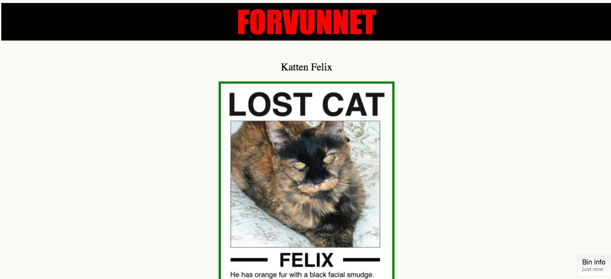
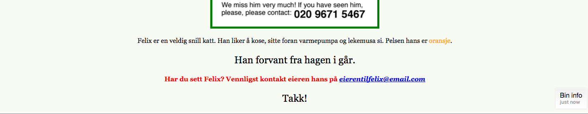

CSS: Endre utseende og stil på tekst
CSS: Endre utseende og stil på tekst
Skrevet av: Arve Seljebu
Introduksjon
I denne oppgaven skal vi jobbe videre med skrift, størrelser og farger. Vi skal utforske forskjellige skrifttyper, se på bakgrunnsfarger og vi skal sette CSS på bilder.
Denne oppgaven bygger på forrige oppgave, CSS: Style nettsider, så hvis du ikke har gjort den, så anbefaler jeg det siden vi skal fortsette på koden derfra. Evt så kan du kopiere koden som ligger nederst på siden til CSS: Style nettsider.
Steg 1: Fonter og tekst-stiler
Vi kan forandre utseende på teksten ved å endre skrifttypen eller fonten som det også heter. De mest vanlige fontene heter:
-
Arial
-
Courier New, Courier
-
Garamond
-
Georgia
-
Lucida Sans, Lucida Grande, Lucida
-
Palatino Linotype
-
Tahoma
-
Times New Roman, Times
-
Trebuchet
-
Verdana
Ikke alle fonter finnes på alle datamaskiner, så vi trenger å angi en reserve font også. Det skal vi se på etterpå.
En font har en stil, de som blir oftest brukt er sans serif eller serif. Under kan du se forskjellen på sans serif og serif. Som du ser er det ikke store forskjellen, men det utgjør en liten forskjell for leseren, noen er lettere å lese enn andre.

La oss prøve å endre fonten på overskriften ved å bruke font-family egenskapene. Dersom du ikke har index.html fra CSS: Style nettsider, så kan du hente koden ved å kopiere den nederst i CSS: Style nettsider-oppgaven.
Merk! i CSS-en har vi font-family: font, skriftstil. Altså har vi navnet på fonten, etterfulgt av hvilken stil vi vil at den skal være, sans-serif eller serif.
h1 {
color: red;
background-color: black;
font-size: 72px;
text-transform: uppercase;
text-decoration: underline;
text-decoration: blink;
font-family: impact, sans-serif;
}
p {
font-family: georgia, 'times new roman', serif;
}
Som du ser over så står det to skirfttyper etter hverandre, georgia og times new roman. Dette forteller CSS-en at georgia er nettsidens førstevalg og dersom denne fonten ikke finnes på maskinen til personen som åpner nettsiden, så velger den times new roman. Times new roman blir derfor reserver fonten.
 Lagre og se det i nettleseren.
Lagre og se det i nettleseren.
Prøv nå med forskjellige fonter og se hvilke du liker best. Legg merke til at hvis navnet på fonten består av flere ord så må navnet skrives inn i anførselstegn, som "times new roman".
Har du en annen font på din datamaskin som ikke er nevnt over? (Det har du helt sikkert). Prøv å åpne programmet Word eller Pages, der kan du se alle fontene du har på datamaskinen.

- Hvis du finner en du liker så prøv om du kan bruke den på nettsiden!
Du kan også lage teksten i fet, kursiv eller begge deler ved hjelp av font-stilegenskaper. La oss forandre epostteksten (husk at den finner vi inne i a-taggen).
a {
font-weight: bold;
}
Lagre og se det i nettleseren.
Eller vi kan sette teksten til kursiv.
a {
font-style: italic;
}
Lagre og se det i nettleseren.
Vi kan til og med bestemme hvor fet skriften skal være ved å bruke egenskapen font-weight. Den bruker verdier som normal, bold, bolder, lighter. Du kan også bruke tall som 100, 200, 300, 400, 500, 600, 700, 800, og 900, hvor 100 er den tynneste og 900 er den tykkeste. Normal tekst er det samme som verdien 400, fet er det samme som 700. Derimot så har ikke alle fonter alle disse verdiene. Så for å være på den sikre siden, er det lurt å bruke normal eller bold osv. Overskrifter er normalt satt til fet skrift som standard. Men hvis du for eksempel ikke ønsker at h2 ikke skal være fet, må vi skrive følgende:
h2 {
font-weight: normal;
}
Prøv det!
Step 2: Kantlinjer!
La oss legge til en kantlinje eller en ramme rundt et bilde.
img {
border-color: green;
border-width: 5px;
border-style: solid;
}
border-color bestemmer hvilken farge rammen eller kantlinjen rundt bildet skal ha.
border-width er tykkelsen på rammen som går rundt bildet.
border-style er stilen på linjen, denne kan også være: dashed, dotted, double, groove, ridge, inset, outset.
Lagre og se det i nettleseren.
Fant du en stil du liker?
Ting å prøve ut
Step 3: IDer og klasser
Vi ønsker å lage et kontaktavsnitt som er uthevet. Vi kan ikke bruke <p> tag fordi det vil endre alle andre paragrafer også. For å gjøre dette må vi legge til en stil for de paragrafene vi vil skal være uthevet. For å gjøre dette kan vi bruke noe som kalles ID. Denne IDen gjør at vi kun endrer stil på de taggene som har samme ID. Vi trenger da å endre HTML-koden vår sånn at den ser slik ut:
<p id="uthevet">Har du sett Felix? Vennligst kontakt eieren hans på <a href="mailto:eierentilfelix@email.com">eierentilfelix@email.com</a></p>
Ved å sette stil på en ID bruker vi # foran ID-navnet i CSS-en:
#uthevet {
font-weight: bold;
color: red;
}
Lagre og se det i nettleseren.
En ID er unik og kan bare bli brukt en gang per side. Så hva gjør vi hvis du ønsker å lage to paragrafer med større skrift? Dette kan vi løse ved å bruke klasser. Det første vi må gjøre er å gi paragrafene et klassenavn, litt på samme måte som å sette en ID bare at vi bruker class.
<p class="stor">Han forvant fra hagen i går.</p>
<p class="stor"><strong>Takk!</strong><p>
Deretter setter vi stilen slik at tekten er større for alle paragrafer med class="stor" (legg merke til at vi bruker . i stedet for #):
.stor {
font-size: 24px;
}
Sammen kan du gjøre med <div>- og HTML5-taggene vi brukte i oppgaven HTML: Del inn nettsiden.
Ting du kan prøve:
Eksempel på hvordan det kan se ut
Eksempel på hvordan siden kan se ut:


Koden for eksempelet over:
<html lang="no">
<head>
<meta name="author" content="#">
<meta charset="UTF-8">
<meta name="description" content="En side laget for å finne katten Felix">
<meta name="keywords" content="Felix, katt, forsvunnet">
<title>Katten Felix er forsvunnet</title>
<!--- CSSen for siden -->
<style>
body{
background-color: #F8FAF4;
text-align: center;
}
h1{
color:red;
background-color:black;
font-size:72px;
text-transform: uppercase;
text-decoration: underline;
text-decoration: blink;
font-family: impact, sans-serif;
}
h2{
font-weight: normal;
}
p {
font-family: georgia, 'times new roman', serif;
}
img {
border-color: green;
border-width: 5px;
border-style: solid;
}
span {
color:orange;
}
a {
font-weight: bold;
font-style: italic;
}
#uthevet{
font-weight: bold;
color: red;
}
.stor{
font-size: 24px;
}
</style>
</head>
<body>
<!-- Dette er et Kodeklubb-prosjekt. Felix er ikke ekte og er egentlig ikke forsvunnet. -->
<h1>Forvunnet</h1>
<h2>Katten Felix</h2>
<img src="http://kodeklubben.github.io/web/forsvunnet_katt/missingcat.png" alt="bilde av Felix" width="400">
<p>Felix er en veldig snill katt. Han liker å kose, sitte foran varmepumpa og lekemusa si. Pelsen hans er <span>oransje</span>. </p>
<p class="stor">Han forvant fra hagen i går.</p>
<p id="uthevet">Har du sett Felix? Vennligst kontakt eieren hans på <a href="mailto:eierentilfelix@email.com">eierentilfelix@email.com</a></p>
<p class="stor">Takk!<p>
</body>
</html>
Forbedre denne siden
Funnet en feil? Kunne noe vært bedre?
Hvis ja, vennligst gi oss tilbakemelding ved å lage en sak på Github eller fiks feilen selv om du kan. Vi er takknemlige for enhver tilbakemelding!